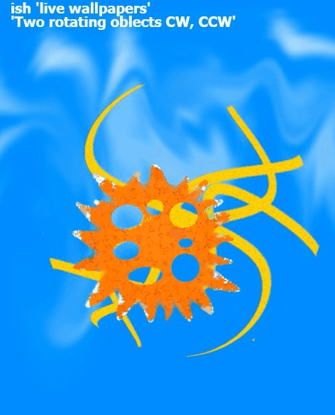

links to my projects:
Serial Terminal Ver.32 ishPLC(C) 2020

Cloud Server & Reader Client 2019

UART Terminal Ver.51 (Serial Terminal)


Android Calculator with external Memory

UI and HMI design samples, SCADA UI

SCADA Video: how it works...
Data Base App for PC "Stock" Ver.5


UART to IP, Video: how it works...
AVR climate regulation system (SW and HW)

GIF animation for webdevelopment

Wallpapers
Walls for PC and Android, Image Viewer

Walls for PC and Android, Image Viewer

ishPLC © 2021
08 Sep 2021
I.Shaturnyi